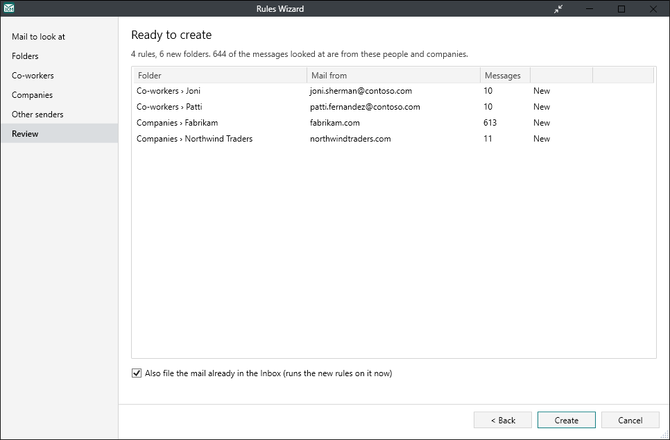
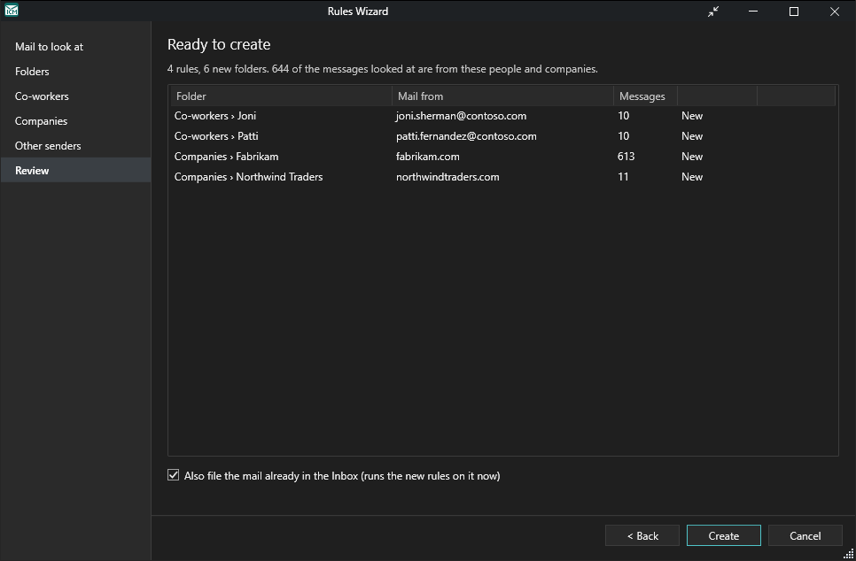
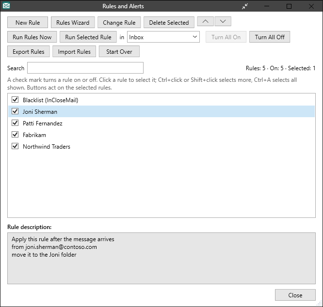
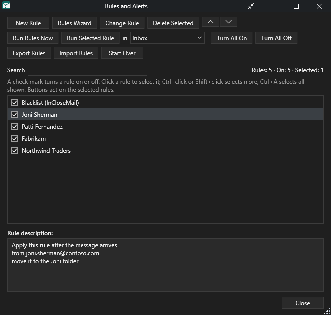

- Rules and Alerts that run on the server: file, flag, mark or delete mail by sender, recipients, words, Cc or attachments.
- Run Rules Now on mail already in a folder, run a new rule as soon as it’s saved, or Run Selected Rule on its own any time, in any of your mailboxes.
- Rules Wizard: suggests a folder and rule for the co-workers and companies you write to (or every busy sender, if you choose), from your mail’s analytics, and creates them in one go.
- Organize Mail into Folders: a step-by-step wizard that makes a folder for each co-worker inside Co-workers and for each company you hear from inside Companies (all of a company’s addresses together), with a rule for each, and files the mail already in your Inbox. Status page mail that many companies send through one service (Statuspage) goes to each company’s own folder, by the name in its subject.




- Start Over: save every rule to a backup file, delete them all and build new ones with Organize Mail into Folders. Import Rules brings any old rule back, creating any folder it needs, with progress shown as it goes.
- Export and import rules to take them to another mailbox.
- Rules that copy mail spotted: when two rules would both move the same message, Exchange keeps a copy in each folder. Rules and Alerts marks them, and Fix Rules That Copy Mail stops the first one there and offers to remove the copies already made.




- Script rules: run a PowerShell script, batch file or program when matching mail arrives, as classic Outlook’s “run a script” rule did.
- Always Move Messages in This Conversation and Always Move Messages From.
- Quick Steps with Outlook’s full list of actions, and Ctrl+Shift+1 to 9 shortcut keys.
- Junk Email: Junk Email Options with Safe Senders, Safe Recipients and phishing protection, Never Block Sender, Sender’s Domain or Group, and Not Junk. For senders you never want to see again, there’s the Blacklist.
- Automatic Replies (out of office).
Missing something you used in Outlook? Choose Help → Suggest a Feature in the app. Found a bug? Choose Help → Report a Bug.